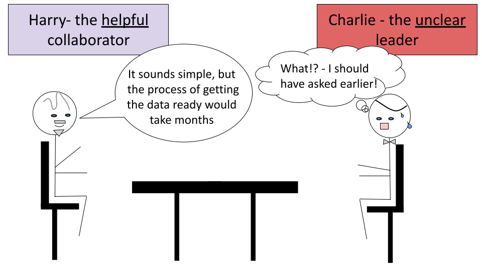
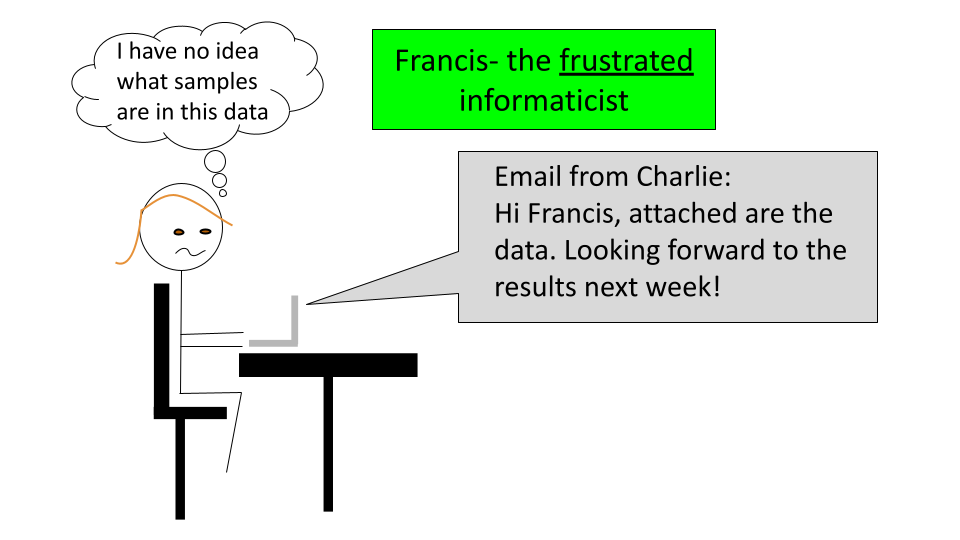
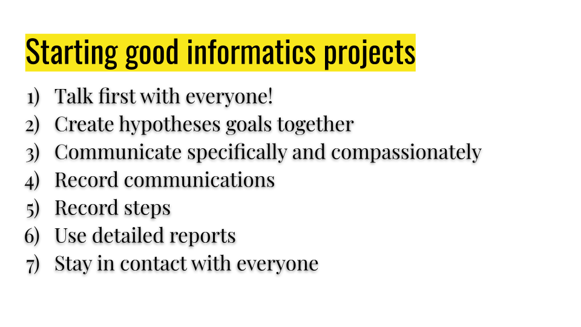

Chapter 2 Guidelines for informatics teams
In this lesson we will discuss general guidelines for how to create and maintain healthy relationships within a multidisciplinary informatics research team.
2.1 Finding and creating informatics teams
The first step to performing a good research study is to find the right people for your research team.
This section is based on a blog post from Roger Peng of the simply statistics blog which has many other useful discussions and resources.
2.1.1 Start early
The key to a successful multidisciplinary project is to start talking with your research teammates early.
If you plan to collaborate with an expert, we suggest that you look out for such collaborators before you even design your studies. If you are new to informatics and you plan to employ or mentor informatics experts in your lab, we also suggest that you seek guidance from an informatics expert before you start an informatics project.
In this section we will provide a guide for finding good coworkers, whether they are mentees, collaborators, or employees, to work on informatics cancer projects particularly for multidisciplinary teams.
2.1.2 Identify good research teammates
Especially for projects with multidisciplinary teams, good communication is vital. Look for people who are easy to talk to.
In Roger’s words:
“If you dont feel comfortable asking (stupid) questions, pointing out problems, or making suggestions, then chances are the science will not be as good as it could be.”
2.2 Communication for informatics teams
Communication is vital for all good work relationships, but especially in a multidisciplinary team. Here are a few tips for keeping communication smooth.
2.2.1 Talk first
Start talking to your collaborators, students, or employees before you even begin a project, so that you can plan the project in the optimal way. This is especially critical for forming the right statistically testable and scientifically useful questions and for collecting the right data to address such questions.
Collecting the right data can be vital to the success of a project. It may not always be obvious what is possible for the experimental biologists to create samples. Is 30 samples actually feasible? How about 300? Would that be performed in different batches? What is necessary or possible for an informatics project to be able to test certain questions with statistical methods? How long would certain analyses take?
These are discussions that should happen long before reagents are purchased, before IRB submissions, and before grant submissions if possible.
 ### Take your time
For employees and mentees, allow time to get comfortable talking to one another. As a leader, take the lead in openly expressing areas that are new to you and facilitate an environment where teammates communicate respect for one another’s unique knowledge and perspectives.
In all cases (with collaborators, employees, and mentees), build in extra time for projects to allow for teaching time. You can teach them about your domain and they can teach you about theirs. This may feel like it is taking extra time but it will ultimately pay off in the end, as you will better be able to work as a team to ask the most useful and testable hypotheses.

2.2.2 Come up with questions/hypotheses together
Not knowing what may be feasible in terms of data collection and analysis can make it nearly impossible to form an appropriately testable hypothesis. Furthermore, it may be difficult to know how your questions fit into the context of a field and what is actually useful to advance treatment and prevention if you are not a domain expert of the cancer or disease that you are studying. By working together in multidisciplinary teams we can determine the best hypotheses to advance science.
Domain experts can help to ensure that the question is feasible from a standpoint of data collection, that it leads to other important questions, that it is new, that it is useful, and that the plan to test it will actually lead to interpretations that are useful.
Informatics experts can help to ensure that the question is feasible from as standpoint of data collection and data analysis, that a question is testable, and that it leads to the interpretations that the domain experts hope to gain.
2.2.3 Be specific
Give and ask for specific feedback. If your collaborator/employee/student says something that you do not quite understand, ask them for more specific clarification. In addition, give feedback that is specific where possible without assuming knowledge that might be necessary and avoid jargon.
For example, if a collaborator simply states that the number of samples would be underpowered, this might not be enough information for you to help solve the issue. Ask for clarification about why, response statements such as “you believe that the sample size is too small to allow for specific statistical text XYZ to be utilized to identify if there are differences between the XYZ groups”.
2.2.4 Be compassionate
Consider the stage of the project and how your discussions may impact your coworker.
For example, pointing out that there is not enough data to do what your collaborator had hoped during later stages of the project can be very disappointing as it is often not possible to collect new data. Being polite and considerate when you make suggestions can make a major difference. Furthermore, suggesting an idea about how the project can still be productive can save your collaborator/coworkers/students stress and heartache. They may not be aware that there is public data available or additional data in your lab that can still save the project.

2.2.5 Keep contact
Regular communication continues the momentum of a project and ensures that important details get discussed when necessary. It also relieves anxiety among coworkers by keeping everyone aware of the status of the project and helping to start discussions if someone needs help.
2.2.6 Schedule extra time AVOCADO trying to figure out where to put this..
As a project continues, new challenges will arise that will again require more time for teaching one another about the scientific process specific to your domain. Build in breathing room in the project schedule where possible, to allow for time for setbacks. Keep in mind that you may be unaware of the setbacks that you may encounter for work outside of your expertise. Creating a situation that is less stressful makes it easier for everyone to maintain positive relationships.
2.3 Record Keeping Practices
Once you have your project rolling, it is important to keep good records of your work, your collaborators work, and your communication. Keeping good records takes time and discipline but it can save you so much time and heartache in the end. Here are some suggestions for how to optimize your record keeping.
2.3.1 Keep organized records of work
Record and communicate notes about your data collection and analyses. Be mindful of overwhelming your coworkers of course, but generally speaking provide extra information where possible. The more people aware of details about what samples were in what batch, the more likely important details are not missed or forgotten. For example if you are sending data to a collaborator send as much information as possible about how it was generated in the email in which you send it to them, even if you have already discussed the data. This can help ensure that no important details fall through the cracks. The best way we think you can do this in general is to use reports - one of our next suggestions.

2.3.2 Keep organized records of communication
Besides recording your work, keep a record of your communications. Organize your emails for projects into a separate folders with easily recognizable titles to save yourself hassle later when something comes into question.

2.3.3 Use reports
Instead of sending informal short emails (which are useful at some points in a workflow), we suggest intermittently sending lab reports with as much information about what was done and why as possible. For informatics related work in R or Python (or other supported languages) we highly suggest using R markdown or jupyter notebooks to track what informatics steps you have performed and why. Beginning these reports with a short description of what raw data you used and when you received it can be critical for ensuring that you are using the correct data! We will describe more about how to use such reports in the final chapter of this course.

2.4 Leaderership best practices for multidisciplinary informatics teams
The section is based on a famous blog post written in 2013 called “The lonely bioinformatician” that describes the angst that informatics personnel often feel when they are the only person in their lab with their skill set. The blog post author, Professor Mick Watson at the University of Edinburgh, describes these individuals as “pet bioinformaticians” in his blog called opiniomics.
He states:
“it is possible they [the pet bioinformaticians] will become isolated and pick up bad practices as they don’t have a senior bioinformatician to guide them. It also concerns me that their career and profesional development might suffer.”
He also acknowledges the challenges of the opposite case:
“Consider the opposite situation – how many bioinformatician PIs manage lab staff? How could we possibly guide a young post doc on how to run gels, PCRs etc nevermind more complicated laboratory SOPs?”
He has since then stated for the PIs of experts who do not share the same skill-sets:
“Just look after them, and recognise you can’t give them everything that they need.You can give them a lot, just not everything.”
“Secondly, there is nothing wrong with being a pet bioinformatician – it can be a really stimulating role, and opens your eyes to lab-based science. I am not criticizing the pets either, I just urge you to look after yourselves.”
And ultimately provides a guide for the “pet bioinformaticians” that can be useful for both informatics expert employees/mentees and also for leaders of such individuals as well as for informatics lab leaders who employ lab-based scientists.
Extending the major themes from his guide and from his post about clinical labs here are guidelines for lab leaders:
2.4.1 Avoid employee isolation
If possible, employ more than one informatics expert or at least collaborate heavily with others - especially those with experience working with human data. Alternatively hire a more senior expert (with expertise studying in the domain you intend) with a higher salary.
In Mick Watson’s words:
“I am aware of a few lone bioinformaticians working in clinical labs. I want to make this clear – this is a bad idea. In fact, it’s a terrible idea. Through no fault of their own, these guys will make mistakes. Those mistakes may have dire consequences if the data are then used to inform a treatment plan or diagnosis.”
In any case, we highly encourage guideline #2 regardless of what option you choose.
2.4.2 Encourage relationships with others in their domain
Enable and encourage your employee to cultivate relationships with others who have similar skill-sets at your institution or local community. If there is no local group of such individuals, see if your employee would be interested in starting one - such as a seminar group or journal club. Also encourage them to join online forums and attend conferences and workshops.
AVOCADO Examples?? - Seems like the ITCR community could be very helpful and should be listed - but also probably smaller cancer specific forums?
2.4.3 Encourage growth outside their domain
On the other hand, it is important that you also cultivate and encourage your employee’s growth in your domain by again suggesting and enabling their participation in conferences and journal clubs on topics relevant to your lab.
2.4.4 Value their perspective about science in general
Encourage feedback and discussion from all of your employees in scientific discussions. Make their input feel welcomed regardless of the topic. A fresh perspective can sometimes lead to really important insights about things that are taken for granted by experts.
2.4.5 Discuss expectations and hypotheses
If your employee is helping with work for a grant, provide the proposal to them. Have a discussion with your employee about your expectations and how feasible they are, as well as to make your informatics hypotheses specific. Avoid projects where the informatics goals are vague. Also remember that many informatics tasks may take more time than you anticipate and your employee may have a better sense of how long something will take. (or vice verse if you are an informatics expert employing lab scientists). Be clear with your employee in these discussions that you are unclear about how long tasks will take, if that is indeed the case. Continue to have open dialogue about expectations and goals as the work proceeds.
2.4.7 Check on them!
Most importantly, make sure that your employee is getting help and feedback from other experts in their domain. It can be easy for your employee to get stuck or go in the wrong direction if left in isolation. How can you do this? Keep tabs on what they are doing in general, if they are still working on the same issue for an extensive amount of time, suggest that they seek help. Also by encouraging the relationships with experts you will provide them with the opportunity to ask others for their thoughts.
- Get external review of work
Particularly in informatics, we can especially track our steps. Make sure that your employees are keeping detailed records about their work and then get them to regularly ask for feedback from others. We all make mistakes, it’s good to get external feedback early and often to ensure that the work is correct.
- Support “deep” work time
One other important thing to know is that informatics work is often best performed with long stretches of uninterrupted time to allow your informatics employees to perform “deep work”.
Why is this? Some of the challenges that your informatics teammates will be working on will require a great deal of abstract thinking and troubleshooting. Such difficult work profits well from deep concentration.
How can you accommodate this? Try to work with your informatics teammates when you schedule lab meetings and be mindful of other time commitments they might have, such as classes, seminars, or other meetings.
On the other hand, if you are an informatics expert mentoring experimental biologists, keep in mind that their experiments will dictate their schedule. Impromptu meetings may be difficult for them at times. Also be aware that some of their experiments may require that they stay late at night or come in very early. Thus on those days, it might be best to not overburden them with other tasks if you want them done well.
 AVOCADO -do I include this somewhere else.. maybe different cartoon
AVOCADO -do I include this somewhere else.. maybe different cartoon
2.5 References
“Finding good collaborators” blog post from Roger Peng of the simply statistics blog which has many other useful discussions and resources
“The lonely bioinformatician” blog post written in 2013 by Professor Mick Watson at the University of Edinburgh
“The lonely bioinformatician revisited: clinical-labs” blog post written in 2014 by Professor Mick Watson at the University of Edinburgh
AVOCADO Add references from Jeff’s advanced data science course etc.